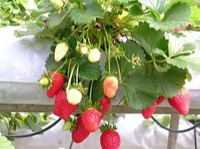

いちご（苺）の生産量 都道府県ランキング
1位から3位までと、とれた量
いちごが日本でいちばん多くとれるのは栃木県です。2万5,700 tで、全国（15万6,600 t）の16%を占めます。

| 順位 | 都道府県 | 収穫量 | 全国に占める割合 |
|---|---|---|---|
| 1位 | 栃木県 | 2万5,700 t | 16% |
| 2位 | 福岡県 | 1万4,400 t | 9.2% |
| 3位 | 熊本県 | 1万1,100 t | 7.1% |
この数字について
- 分類：バラ科
- 全国の収穫量：15万6,600 t
- この数字が表すもの：収穫量（畑や田でとれた重さ）
- 調査：作物統計調査 作況調査（野菜） 令和6年産
- くだものとして扱っていますが、統計では野菜として調べられています。
- 24県分を調査（調査していない県は順位に入りません）
いちごの生産量について、よくある質問
- いちごの生産量が日本一の都道府県はどこですか？
- 栃木県です。作物統計調査 作況調査（野菜）（令和6年産）で2万5,700 tでした。
- いちごの生産量ランキング2位・3位はどこですか？
- 2位は福岡県（1万4,400 t）、3位は熊本県（1万1,100 t）です。
- いちごの全国の生産量はどれくらいですか？
- 15万6,600 t（令和6年産）です。